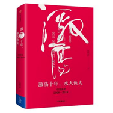

作者: 吴晓波 著
出版时间: 2017-11
出版社: 中信出版社
索书号: 002115458712
知名财经作者吴晓波新作，畅销十年、销量超过两百万册的《激荡三十年》续篇，至此完成改革开放四十年企业史完整记录。
作为时代记录者，吴晓波有意识地从1978年，中国改革开放伊始，记录中国翻天覆地的变化和对我们影响至深的人物与事件，串成一部我们每个人的时代激荡史。而*的这十年，无疑更壮观，也更扑朔迷离。
很多事情，在当时并未有很深很透的感受，回过头来再看，可能命运的轨迹就在那一刻无意中形成。这也是我们之所以应该回望历史的原因。
作为时代记录者，吴晓波有意识地从1978年，中国改革开放伊始，记录中国翻天覆地的变化和对我们影响至深的人物与事件，串成一部我们每个人的时代激荡史。而*的这十年，无疑更壮观，也更扑朔迷离。
很多事情，在当时并未有很深很透的感受，回过头来再看，可能命运的轨迹就在那一刻无意中形成。这也是我们之所以应该回望历史的原因。